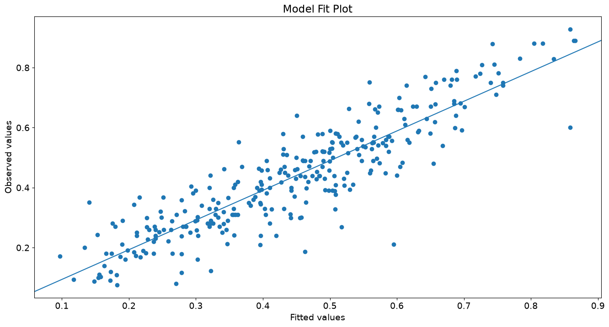
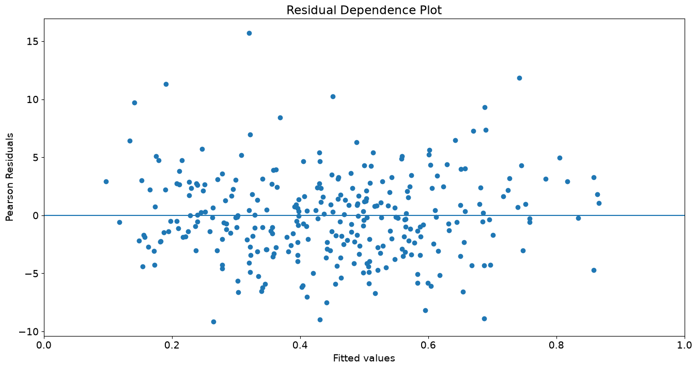
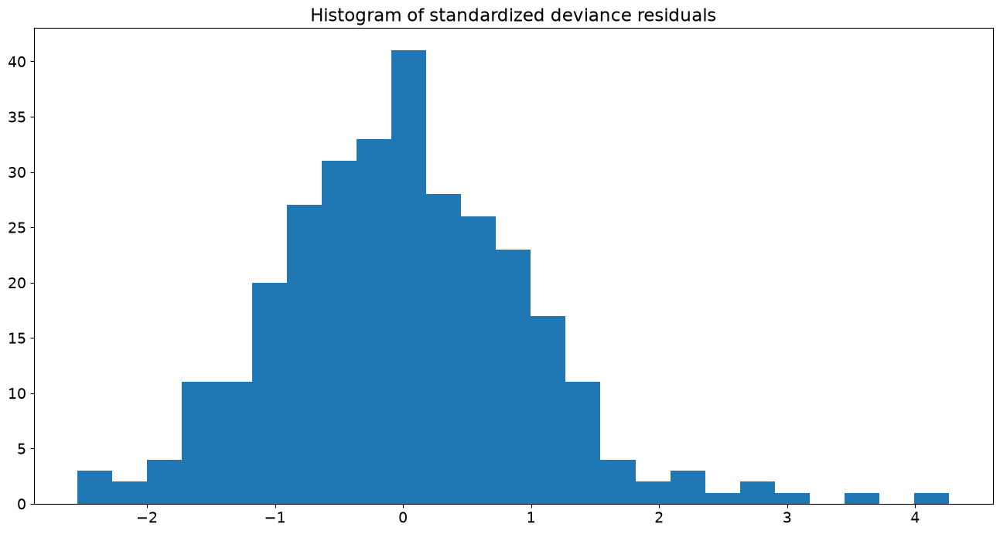
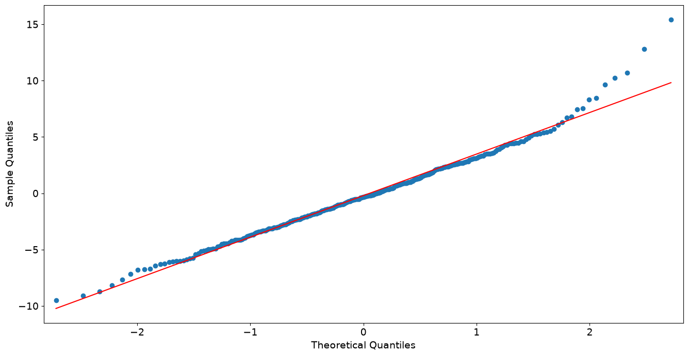

Generalized Linear Models#
[1]:
%matplotlib inline
[2]:
import numpy as np
import statsmodels.api as sm
from matplotlib import pyplot as plt
from scipy import stats
plt.rc("figure", figsize=(16, 8))
plt.rc("font", size=14)
GLM: Binomial response data#
Load Star98 data#
In this example, we use the Star98 dataset which was taken with permission from Jeff Gill (2000) Generalized linear models: A unified approach. Codebook information can be obtained by typing:
[3]:
print(sm.datasets.star98.NOTE)
::
Number of Observations - 303 (counties in California).
Number of Variables - 13 and 8 interaction terms.
Definition of variables names::
NABOVE - Total number of students above the national median for the
math section.
NBELOW - Total number of students below the national median for the
math section.
LOWINC - Percentage of low income students
PERASIAN - Percentage of Asian student
PERBLACK - Percentage of black students
PERHISP - Percentage of Hispanic students
PERMINTE - Percentage of minority teachers
AVYRSEXP - Sum of teachers' years in educational service divided by the
number of teachers.
AVSALK - Total salary budget including benefits divided by the number
of full-time teachers (in thousands)
PERSPENK - Per-pupil spending (in thousands)
PTRATIO - Pupil-teacher ratio.
PCTAF - Percentage of students taking UC/CSU prep courses
PCTCHRT - Percentage of charter schools
PCTYRRND - Percentage of year-round schools
The below variables are interaction terms of the variables defined
above.
PERMINTE_AVYRSEXP
PEMINTE_AVSAL
AVYRSEXP_AVSAL
PERSPEN_PTRATIO
PERSPEN_PCTAF
PTRATIO_PCTAF
PERMINTE_AVTRSEXP_AVSAL
PERSPEN_PTRATIO_PCTAF
Load the data and add a constant to the exogenous (independent) variables:
[4]:
data = sm.datasets.star98.load()
data.exog = sm.add_constant(data.exog, prepend=False)
The dependent variable is N by 2 (Success: NABOVE, Failure: NBELOW):
[5]:
print(data.endog.head())
NABOVE NBELOW
0 452.0 355.0
1 144.0 40.0
2 337.0 234.0
3 395.0 178.0
4 8.0 57.0
The independent variables include all the other variables described above, as well as the interaction terms:
[6]:
print(data.exog.head())
LOWINC PERASIAN PERBLACK PERHISP PERMINTE AVYRSEXP AVSALK \
0 34.39730 23.299300 14.235280 11.411120 15.91837 14.70646 59.15732
1 17.36507 29.328380 8.234897 9.314884 13.63636 16.08324 59.50397
2 32.64324 9.226386 42.406310 13.543720 28.83436 14.59559 60.56992
3 11.90953 13.883090 3.796973 11.443110 11.11111 14.38939 58.33411
4 36.88889 12.187500 76.875000 7.604167 43.58974 13.90568 63.15364
PERSPENK PTRATIO PCTAF ... PCTYRRND PERMINTE_AVYRSEXP \
0 4.445207 21.71025 57.03276 ... 22.222220 234.102872
1 5.267598 20.44278 64.62264 ... 0.000000 219.316851
2 5.482922 18.95419 53.94191 ... 0.000000 420.854496
3 4.165093 21.63539 49.06103 ... 7.142857 159.882095
4 4.324902 18.77984 52.38095 ... 0.000000 606.144976
PERMINTE_AVSAL AVYRSEXP_AVSAL PERSPEN_PTRATIO PERSPEN_PCTAF \
0 941.68811 869.9948 96.50656 253.52242
1 811.41756 957.0166 107.68435 340.40609
2 1746.49488 884.0537 103.92435 295.75929
3 648.15671 839.3923 90.11341 204.34375
4 2752.85075 878.1943 81.22097 226.54248
PTRATIO_PCTAF PERMINTE_AVYRSEXP_AVSAL PERSPEN_PTRATIO_PCTAF const
0 1238.1955 13848.8985 5504.0352 1.0
1 1321.0664 13050.2233 6958.8468 1.0
2 1022.4252 25491.1232 5605.8777 1.0
3 1061.4545 9326.5797 4421.0568 1.0
4 983.7059 38280.2616 4254.4314 1.0
[5 rows x 21 columns]
Fit and summary#
[7]:
glm_binom = sm.GLM(data.endog, data.exog, family=sm.families.Binomial())
res = glm_binom.fit()
print(res.summary())
Generalized Linear Model Regression Results
================================================================================
Dep. Variable: ['NABOVE', 'NBELOW'] No. Observations: 303
Model: GLM Df Residuals: 282
Model Family: Binomial Df Model: 20
Link Function: Logit Scale: 1.0000
Method: IRLS Log-Likelihood: -2998.6
Date: Wed, 24 Jun 2026 Deviance: 4078.8
Time: 14:41:48 Pearson chi2: 4.05e+03
No. Iterations: 5 Pseudo R-squ. (CS): 1.000
Covariance Type: nonrobust
===========================================================================================
coef std err z P>|z| [0.025 0.975]
-------------------------------------------------------------------------------------------
LOWINC -0.0168 0.000 -38.749 0.000 -0.018 -0.016
PERASIAN 0.0099 0.001 16.505 0.000 0.009 0.011
PERBLACK -0.0187 0.001 -25.182 0.000 -0.020 -0.017
PERHISP -0.0142 0.000 -32.818 0.000 -0.015 -0.013
PERMINTE 0.2545 0.030 8.498 0.000 0.196 0.313
AVYRSEXP 0.2407 0.057 4.212 0.000 0.129 0.353
AVSALK 0.0804 0.014 5.775 0.000 0.053 0.108
PERSPENK -1.9522 0.317 -6.162 0.000 -2.573 -1.331
PTRATIO -0.3341 0.061 -5.453 0.000 -0.454 -0.214
PCTAF -0.1690 0.033 -5.169 0.000 -0.233 -0.105
PCTCHRT 0.0049 0.001 3.921 0.000 0.002 0.007
PCTYRRND -0.0036 0.000 -15.878 0.000 -0.004 -0.003
PERMINTE_AVYRSEXP -0.0141 0.002 -7.391 0.000 -0.018 -0.010
PERMINTE_AVSAL -0.0040 0.000 -8.450 0.000 -0.005 -0.003
AVYRSEXP_AVSAL -0.0039 0.001 -4.059 0.000 -0.006 -0.002
PERSPEN_PTRATIO 0.0917 0.015 6.321 0.000 0.063 0.120
PERSPEN_PCTAF 0.0490 0.007 6.574 0.000 0.034 0.064
PTRATIO_PCTAF 0.0080 0.001 5.362 0.000 0.005 0.011
PERMINTE_AVYRSEXP_AVSAL 0.0002 2.99e-05 7.428 0.000 0.000 0.000
PERSPEN_PTRATIO_PCTAF -0.0022 0.000 -6.445 0.000 -0.003 -0.002
const 2.9589 1.547 1.913 0.056 -0.073 5.990
===========================================================================================
Quantities of interest#
[8]:
print("Total number of trials:", data.endog.iloc[:, 0].sum())
print("Parameters: ", res.params)
print("T-values: ", res.tvalues)
Total number of trials: 108418.0
Parameters: LOWINC -0.016815
PERASIAN 0.009925
PERBLACK -0.018724
PERHISP -0.014239
PERMINTE 0.254487
AVYRSEXP 0.240694
AVSALK 0.080409
PERSPENK -1.952161
PTRATIO -0.334086
PCTAF -0.169022
PCTCHRT 0.004917
PCTYRRND -0.003580
PERMINTE_AVYRSEXP -0.014077
PERMINTE_AVSAL -0.004005
AVYRSEXP_AVSAL -0.003906
PERSPEN_PTRATIO 0.091714
PERSPEN_PCTAF 0.048990
PTRATIO_PCTAF 0.008041
PERMINTE_AVYRSEXP_AVSAL 0.000222
PERSPEN_PTRATIO_PCTAF -0.002249
const 2.958878
dtype: float64
T-values: LOWINC -38.749083
PERASIAN 16.504736
PERBLACK -25.182189
PERHISP -32.817913
PERMINTE 8.498271
AVYRSEXP 4.212479
AVSALK 5.774998
PERSPENK -6.161911
PTRATIO -5.453217
PCTAF -5.168654
PCTCHRT 3.921200
PCTYRRND -15.878260
PERMINTE_AVYRSEXP -7.390931
PERMINTE_AVSAL -8.449639
AVYRSEXP_AVSAL -4.059162
PERSPEN_PTRATIO 6.321099
PERSPEN_PCTAF 6.574347
PTRATIO_PCTAF 5.362290
PERMINTE_AVYRSEXP_AVSAL 7.428064
PERSPEN_PTRATIO_PCTAF -6.445137
const 1.913012
dtype: float64
First differences: We hold all explanatory variables constant at their means and manipulate the percentage of low income households to assess its impact on the response variables:
[9]:
means = data.exog.mean(axis=0)
means25 = means.copy()
means25.iloc[0] = stats.scoreatpercentile(data.exog.iloc[:, 0], 25)
means75 = means.copy()
means75.iloc[0] = lowinc_75per = stats.scoreatpercentile(data.exog.iloc[:, 0], 75)
resp_25 = res.predict(means25)
resp_75 = res.predict(means75)
diff = resp_75 - resp_25
The interquartile first difference for the percentage of low income households in a school district is:
[10]:
print("%2.4f%%" % (diff.iloc[0] * 100))
-11.8753%
Plots#
We extract information that will be used to draw some interesting plots:
[11]:
nobs = res.nobs
y = data.endog.iloc[:, 0] / data.endog.sum(1)
yhat = res.mu
/tmp/ipykernel_5368/1469734208.py:2: Pandas4Warning: Starting with pandas version 4.0 all arguments of sum will be keyword-only.
y = data.endog.iloc[:, 0] / data.endog.sum(1)
Plot yhat vs y:
[12]:
from statsmodels.graphics.api import abline_plot
[13]:
fig, ax = plt.subplots()
ax.scatter(yhat, y)
line_fit = sm.OLS(y, sm.add_constant(yhat, prepend=True)).fit()
abline_plot(model_results=line_fit, ax=ax)
ax.set_title("Model Fit Plot")
ax.set_ylabel("Observed values")
ax.set_xlabel("Fitted values");

Plot yhat vs. Pearson residuals:
[14]:
fig, ax = plt.subplots()
ax.scatter(yhat, res.resid_pearson)
ax.hlines(0, 0, 1)
ax.set_xlim(0, 1)
ax.set_title("Residual Dependence Plot")
ax.set_ylabel("Pearson Residuals")
ax.set_xlabel("Fitted values")
[14]:
Text(0.5, 0, 'Fitted values')

Histogram of standardized deviance residuals:
[15]:
from scipy import stats
fig, ax = plt.subplots()
resid = res.resid_deviance.copy()
resid_std = stats.zscore(resid)
ax.hist(resid_std, bins=25)
ax.set_title("Histogram of standardized deviance residuals");

QQ Plot of Deviance Residuals:
[16]:
from statsmodels import graphics
graphics.gofplots.qqplot(resid, line="r")
[16]:


GLM: Gamma for proportional count response#
Load Scottish Parliament Voting data#
In the example above, we printed the NOTE attribute to learn about the Star98 dataset. statsmodels datasets ships with other useful information. For example:
[17]:
print(sm.datasets.scotland.DESCRLONG)
This data is based on the example in Gill and describes the proportion of
voters who voted Yes to grant the Scottish Parliament taxation powers.
The data are divided into 32 council districts. This example's explanatory
variables include the amount of council tax collected in pounds sterling as
of April 1997 per two adults before adjustments, the female percentage of
total claims for unemployment benefits as of January, 1998, the standardized
mortality rate (UK is 100), the percentage of labor force participation,
regional GDP, the percentage of children aged 5 to 15, and an interaction term
between female unemployment and the council tax.
The original source files and variable information are included in
/scotland/src/
Load the data and add a constant to the exogenous variables:
[18]:
data2 = sm.datasets.scotland.load()
data2.exog = sm.add_constant(data2.exog, prepend=False)
print(data2.exog.head())
print(data2.endog.head())
COUTAX UNEMPF MOR ACT GDP AGE COUTAX_FEMALEUNEMP const
0 712.0 21.0 105.0 82.4 13566.0 12.3 14952.0 1.0
1 643.0 26.5 97.0 80.2 13566.0 15.3 17039.5 1.0
2 679.0 28.3 113.0 86.3 9611.0 13.9 19215.7 1.0
3 801.0 27.1 109.0 80.4 9483.0 13.6 21707.1 1.0
4 753.0 22.0 115.0 64.7 9265.0 14.6 16566.0 1.0
0 60.3
1 52.3
2 53.4
3 57.0
4 68.7
Name: YES, dtype: float64
Model Fit and summary#
[19]:
glm_gamma = sm.GLM(
data2.endog, data2.exog, family=sm.families.Gamma(sm.families.links.Log())
)
glm_results = glm_gamma.fit()
print(glm_results.summary())
Generalized Linear Model Regression Results
==============================================================================
Dep. Variable: YES No. Observations: 32
Model: GLM Df Residuals: 24
Model Family: Gamma Df Model: 7
Link Function: Log Scale: 0.0035927
Method: IRLS Log-Likelihood: -83.110
Date: Wed, 24 Jun 2026 Deviance: 0.087988
Time: 14:41:51 Pearson chi2: 0.0862
No. Iterations: 7 Pseudo R-squ. (CS): 0.9797
Covariance Type: nonrobust
======================================================================================
coef std err z P>|z| [0.025 0.975]
--------------------------------------------------------------------------------------
COUTAX -0.0024 0.001 -2.466 0.014 -0.004 -0.000
UNEMPF -0.1005 0.031 -3.269 0.001 -0.161 -0.040
MOR 0.0048 0.002 2.946 0.003 0.002 0.008
ACT -0.0067 0.003 -2.534 0.011 -0.012 -0.002
GDP 8.173e-06 7.19e-06 1.136 0.256 -5.93e-06 2.23e-05
AGE 0.0298 0.015 2.009 0.045 0.001 0.059
COUTAX_FEMALEUNEMP 0.0001 4.33e-05 2.724 0.006 3.31e-05 0.000
const 5.6581 0.680 8.318 0.000 4.325 6.991
======================================================================================
GLM: Gaussian distribution with a noncanonical link#
Artificial data#
[20]:
nobs2 = 100
x = np.arange(nobs2)
np.random.seed(54321)
X = np.column_stack((x, x**2))
X = sm.add_constant(X, prepend=False)
lny = np.exp(-(0.03 * x + 0.0001 * x**2 - 1.0)) + 0.001 * np.random.rand(nobs2)
Fit and summary (artificial data)#
[21]:
gauss_log = sm.GLM(lny, X, family=sm.families.Gaussian(sm.families.links.Log()))
gauss_log_results = gauss_log.fit()
print(gauss_log_results.summary())
Generalized Linear Model Regression Results
==============================================================================
Dep. Variable: y No. Observations: 100
Model: GLM Df Residuals: 97
Model Family: Gaussian Df Model: 2
Link Function: Log Scale: 1.0531e-07
Method: IRLS Log-Likelihood: 662.92
Date: Wed, 24 Jun 2026 Deviance: 1.0215e-05
Time: 14:41:51 Pearson chi2: 1.02e-05
No. Iterations: 7 Pseudo R-squ. (CS): 1.000
Covariance Type: nonrobust
==============================================================================
coef std err z P>|z| [0.025 0.975]
------------------------------------------------------------------------------
x1 -0.0300 5.6e-06 -5361.316 0.000 -0.030 -0.030
x2 -9.939e-05 1.05e-07 -951.091 0.000 -9.96e-05 -9.92e-05
const 1.0003 5.39e-05 1.86e+04 0.000 1.000 1.000
==============================================================================